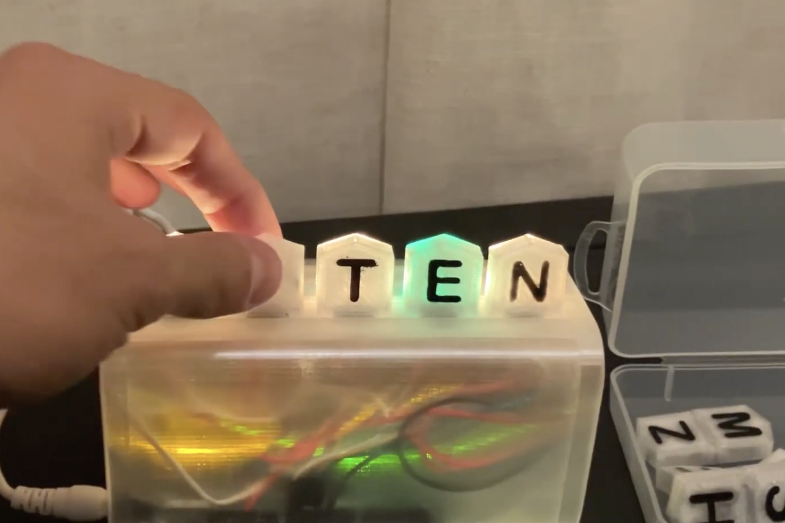
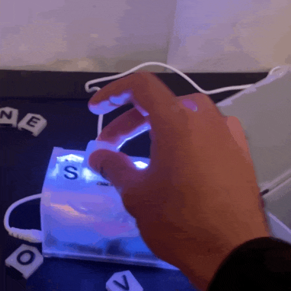
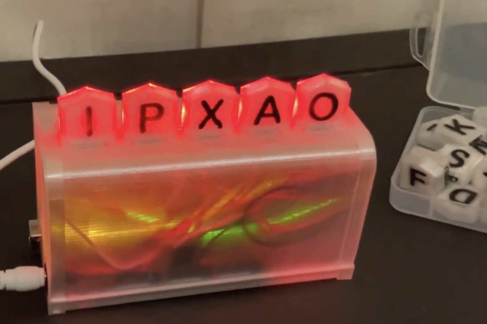
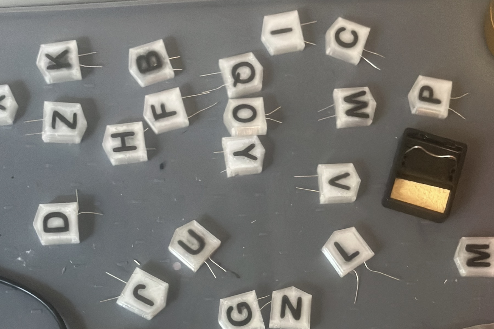

My dad likes Wordle, I wanted to create a version he could play without being on his phone.
Letters are uniquely identified by resistors inside them. When placed on the dock, they complete a voltage divider.
Arduino analog inputs read the unique voltage, and map to a letter.



